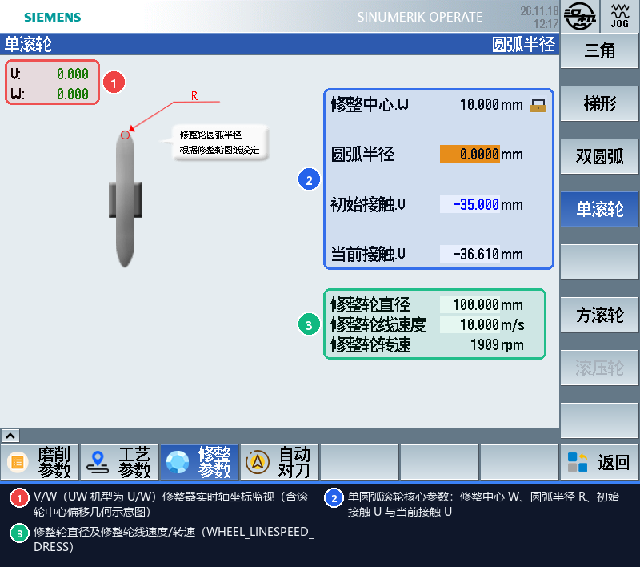
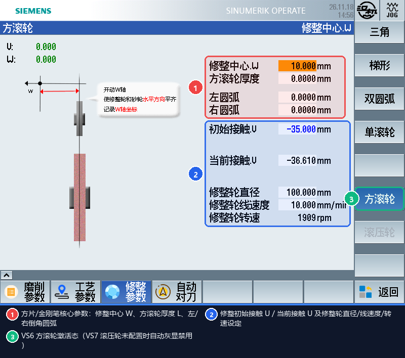
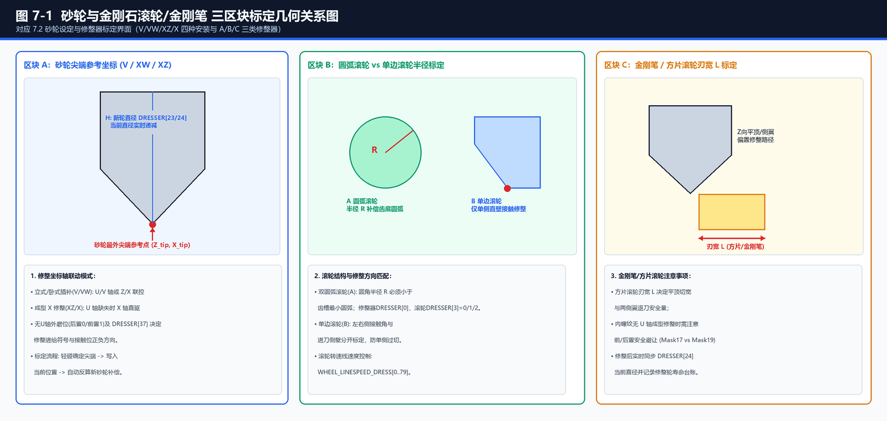
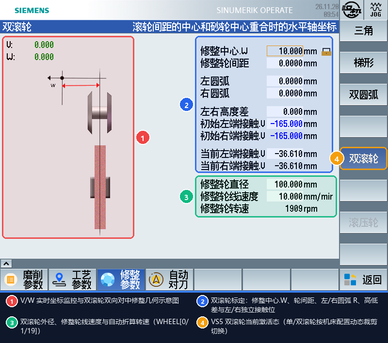
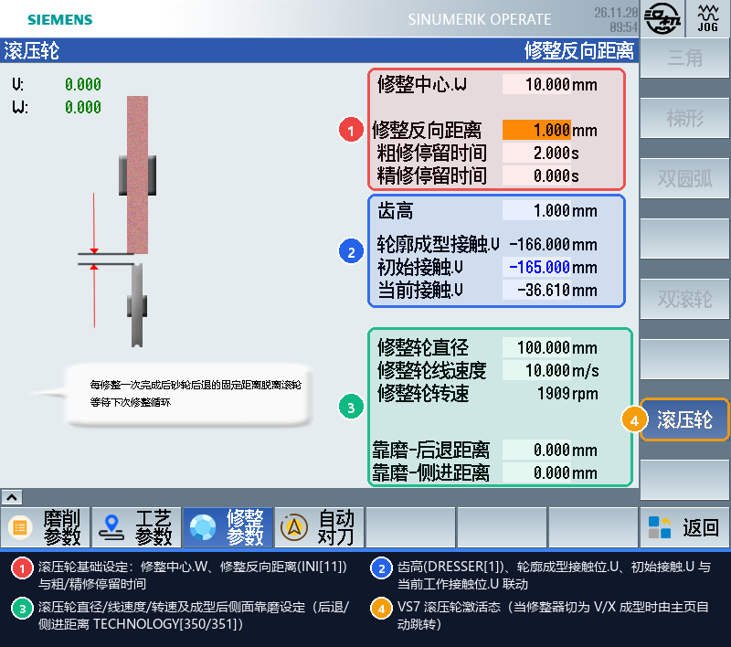
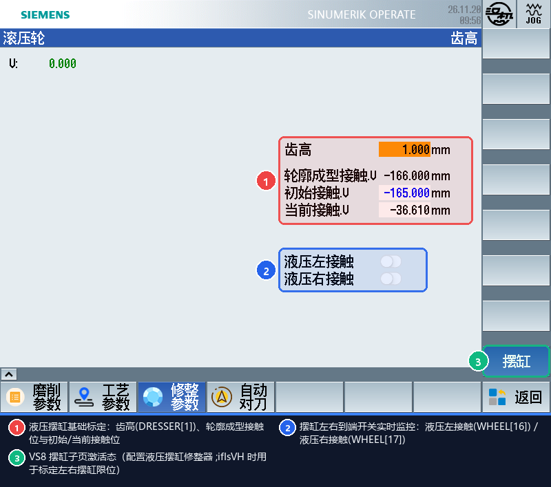

7.2 滚轮类型与修整中心校准方法
在 修整参数 界面（a_dress.com）按配置动态显示的右侧垂直软键中点击 单滚轮（VS4）、双滚轮（VS5）、方滚轮（VS6）或 滚压轮（VS7），即可进入 a_dressware.com 对应硬件型号的滚轮标定页；若配置为液压摆缸机型（;ifIsVH），进入 a_dressware.com 滚轮子界面后可点击子页右侧 摆缸（VS8）切入 Mask15。



1. 四类常见滚轮配置面与核心参数
| 滚轮类型 | 对应 Mask 编号 | 专属几何特征参数 | 共有参数 |
|---|---|---|---|
| 单滚轮 | Mask4（VW/UW）Mask12（XZ/XW） |
圆弧半径（WHEEL[4]，即滚轮尖端圆弧角 R，务必查图纸输入精确值，精度至 0.0001 mm） |
修整中心、初始接触位置、当前接触位置、修整轮直径（WHEEL[0]）、修整轮线速度（WHEEL[1]，常用 15 m/s）与自动换算的 修整轮转速（WHEEL[19]） |
| 方滚轮 | Mask6（VW/UW）Mask14（XZ/XW） |
方滚轮厚度（WHEEL[3]）、左圆弧半径（WHEEL[8]）、右圆弧半径（WHEEL[9]） |
同上，影响方滚轮修整两侧砂轮边缘时的偏置宽度与倒圆补偿 |
| 双滚轮 | Mask5（VW）Mask13（XZ） |
双滚轮间距（WHEEL[2]）、左/右圆弧半径（WHEEL[6] / WHEEL[7]）、左右轮高低差（WHEEL[15]：实测左高右低输正，左低右高输负）、左/右端分别独立的初始与当前接触位（初始 WHEEL[12] / WHEEL[13] 与当前 WHEEL[10] / WHEEL[11]） |
同上，专用于两边对称或高速双面成型插补 |
| 滚压轮 / 摆缸 | Mask11（VW）Mask16/17/19（XZ/X）Mask15（液压摆缸） |
粗修停留时间（DRESSER[47]）与 精修停留时间（WHEEL[18]，推荐 1 s）；修整中反向距离（INI[11]：0 ~ 1 mm，0 表示持续进给不退让）；齿高（DRESSER[1]）；轮廓成型接触（WHEEL[12]）；成型修完侧面靠磨（使能 TECHNOLOGY[308]、靠磨-后退距离 TECHNOLOGY[350]、靠磨-侧进距离 TECHNOLOGY[351]）；液压摆缸页实时监控 液压左接触（WHEEL[16]） 与 液压右接触（WHEEL[17]） 开关状态 |
VW/XZ 下的滚压轮仍需设置 修整中心，XZ/X 模式需校验 修整中心距 |



UW 修整器专有项（
;ifIsUW）：若机床配置为UW修整器，Mask4/Mask6/Mask11左下方额外开放UW 修整位 .X（DRESSER[140]），用于定义修整期间主轴X轴所处的固定工作位坐标；同时页顶显示回零时砂轮与修整轮中心距（DRESSER[2]）。
2. 两大关键原点校准计算公式（现场必测）
第一次安装调试、更换滚轮或撞机重新找回零点后，必须严格按下面两步完成原点参数标定（受右上角小锁图标 para_switch 保护，需先点击解锁后再修改）：
2.1 水平轴“修整中心”校准（DRESSER[21]，适用于插补及 VW 滚压轮）
保证修整器在 W 轴或 Z 轴方向处于砂轮厚度正中央的标定步骤：
- 在手动状态下开动滚轮（
V/W或X/Z）使滚轮 左侧边沿 轻碰接触砂轮 右侧端面（或对应侧面贴齐），记录水平坐标W1（或Z1）； - 让滚轮绕开后贴合砂轮 另一侧端面，记录水平坐标
W2（或Z2）； - 计算中心位置填入
修整中心： - 涉及 UW/XZ 回零安全中心距 或 方/双滚轮宽度 时，程序内会自动叠加砂轮宽度
DRESSER[22]与方/双滚轮几何偏置完成居中对齐。
2.2 X/V 轴“修整中心距”与“初始接触”校准（DRESSER[2]）
- 在
V-W/V独立轴机构中：直接移动V轴让新砂轮最高点轻碰滚轮外沿，将此时的V轴坐标直接录入初始接触位置（WHEEL[14]）与当前接触位置（WHEEL[10]）即可； - 在
X-Z/X共享 X 轴机构中（必须通过修整中心距解算动态径向关系）：- 在 修整参数 填入新砂轮实测直径 （
DRESSER[23]），在 滚轮界面 填入滚轮图纸外径 （WHEEL[0]）及圆弧半径/齿高； - 手动移动
X轴让砂轮外圆外沿刚接触滚轮外沿，记录此刻机械坐标 ，填入当前接触.X； - 计算两中心距（注意正负方向符号与机床结构对应）：
- 黄金校验方法：把算出的
修整中心距（注意判断正负方向，通常砂轮在滚轮正向输入正值、负向输入负值）填入并回车后，立刻观察下方只读计算的初始接触.X数值是否与刚才填入的当前接触.X完全相等——若相等，说明方向与中心距标定 100% 准确；若不相等或差了一个滚轮直径，立刻检查公式正负号！
- 在 修整参数 填入新砂轮实测直径 （